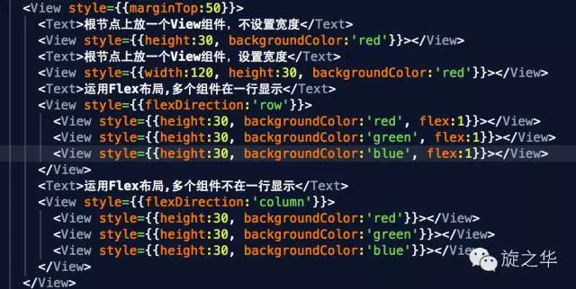

在前面的案例中，界面的搭建都是采用CSS的布局，基于盒子模型，依赖 display属性 ， position属性， float属性。但对于那些特殊布局非常不方便，比如，垂直居中。
一种全新的针对web和移动开发布局应运而生：Flex布局，可以简便、完整、响应式地实现各种页面布局。目前，它已经得到了所有浏览器的支持，这意味着，现在就能很安全地使用这项功能。

FlexBox布局
FlexBox是什么意思呢？
flexible（形容词）：能够伸缩或者很容易变化，以适应外界条件的变化
box（名词）：通用的矩形容器
什么是FlexBox布局?
弹性盒模型（The Flexible Box Module）,又叫Flexbox，意为“弹性布局”，旨在通过弹性的方式来对齐和分布容器中内容的空间，使其能适应不同屏幕，为盒装模型提供最大的灵活性。
Flex布局主要思想是：让容器有能力让其子项目能够改变其宽度、高度（甚至是顺序），以最佳方式填充可用空间；
React native中的FlexBox是这个规范的一个子集。
大部分情况下是处理图中FlexItem在FlexContainer中的位置和尺寸关系
Flexbox在开发中的应用场景
Flexbox在布局中能够解决什么问题？
浮动布局
各种机型屏幕的适配
水平和垂直居中
自动分配宽度
……
在CSS中，常规的布局是基于块和内联流方向，而Flex布局是基于flex-flow流,下图很好解释了Flex布局的思想：
容器默认存在两根轴：水平的主轴（main axis）和垂直的交叉轴（cross axis）。主轴的开始位置（与边框的交叉点）叫做main start，结束位置叫做main end；交叉轴的开始位置叫做cross start，结束位置叫做cross end。
项目默认沿主轴排列，单个项目占据的主轴空间叫做main size，占据的交叉轴空间叫做cross size。
根据伸缩项目排列方式的不同，主轴和侧轴方向也有所变化：
Flexbox的常用属性
a) flexDirection: `row | row-reverse | column | column-reverse`
该属性决定主轴的方向（即项目的排列方向）。
row：主轴为水平方向，起点在左端。
row-reverse：主轴为水平方向，起点在右端。
column(默认值)：主轴为垂直方向，起点在上沿。
column-reverse：主轴为垂直方向，起点在下沿。
b) justifyContent:`flex-start | flex-end | center | space-between | space-around`
定义了伸缩项目在主轴线的对齐方式
lex-start(默认值)：伸缩项目向一行的起始位置靠齐。
flex-end：伸缩项目向一行的结束位置靠齐。
center：伸缩项目向一行的中间位置靠齐。
space-between：两端对齐，项目之间的间隔都相等。
space-around：伸缩项目会平均地分布在行里，两端保留一半的空间。
c) alignItems: `flex-start | flex-end | center | baseline | stretch`
定义项目在交叉轴上如何对齐，可以把其想像成侧轴（垂直于主轴）的“对齐方式”。
flex-start：交叉轴的起点对齐。
flex-end：交叉轴的终点对齐 。
center：交叉轴的中点对齐。
baseline：项目的第一行文字的基线对齐。
d) flexWrap: `nowrap | wrap | wrap-reverse`
默认情况下，项目都排在一条线（又称”轴线”）上。flex-wrap属性定义，如果一条轴线排不下，如何换行。
nowrap(默认值)：不换行。
wrap：换行，第一行在上方。
wrap-reverse：换行，第一行在下方。（和wrap相反）
元素属性
a）flex
“flex-grow”、“flex-shrink”和“flex-basis”三个属性的缩写， 其中第二个和第三个参数（flex-shrink、flex-basis）是可选参数。
默认值为“0 1 auto”。
宽度 ＝ 弹性宽度 * ( flexGrow / sum( flexGorw ) )
b）alignSelf: “auto | flex-start | flex-end | center | baseline | stretch”
align-self属性允许单个项目有与其他项目不一样的对齐方式，可覆盖align-items属性。默认值为auto，表示继承父元素的align-items属性，如果没有父元素，则等同于stretch。
在React Native中使用Flexbox
获取当前屏幕的宽度、高度、分辨率
图 4-1 获取系统的Dimensions类库
图 4-2 输出当前屏幕的相关参数
图 4-3 运行的结果
图4-5 iPhone家族的相关屏幕参数
常用属性Demo演示-绝对定位和相对定位
与前面所学的css定位不同，在React Native中定位不需要再父组件中设置position属性。
运行结果：
结论：通常情况下设置position和absolute，定位的效果是一样的，但是如果父组件设置了内边距，position会做出相应的定位改变，而absolute则不会。
常用属性Demo演示-默认宽度
在前面的学习中，我们都知道块级标签如果不设置宽度，通常都是独占一行的，那么在React Native中的组件是否也遵循这样的规律呢？

运行结果:

注意：容器需要添加flexDirection才能让子元素flex;
结论：flex的元素如果不设置宽度， 都会百分之百的占满父容器。
常用属性Demo演示-水平垂直居中
在前面的css学习中，我们经常会在布局的时候使文本或者图片水平垂直居中，那么如何通过flexbox的alignItems 和 justifyContent 来让组件居中呢？
代码演示如下：
运行结果如下图：
注意：一旦设置alignItems属性之后，组件的大小包裹随着内容的尺寸；此外水平居中和垂直居中还要结合FlexDirection进行判断。
常用属性Demo演示-padding和margin
在前面学习css的样式中，我们可以给行内标签和非行内标签设置内边距和外边距，那么在React Native中是否也是遵循同样的规律呢？我们一起来研究下。
a）padding
在inline和非inline元素上的padding的使用情况：
运行结果如下：
结论：在React Native中，inline和非inline中padding的用法是可行的。
b）margin
在inline和非inline元素上的margin的使用情况：
运行结果如下：
结论：在React Native中，inline和非inline中margin的用法同样是可行的。
(本文转载自旋之华微信公众号)